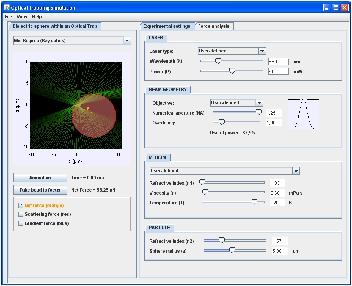
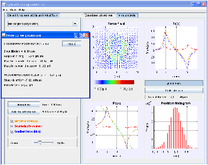

Applet Description |
The applet simulates the behavior of a spherical dielectric particle trapped by means of a laser beam focused by a microscope objective. The program and the source code can be downloaded from http://code.google.com/p/optical-tweezers/. The simulation, including the movement of the particle, is confined to the xz plane. The calculation of the trapping force is carried out in the geometrical optics approach (Mie approximation) or in the Rayleigh approximation, according to the size of the particle. The user can select the proper working conditions by using the selector located at the left panel.
 
On the left panel, a transversal section of the optical trap is shown. The z−axis corresponds to the beam propagation direction while the x−axis is the transversal coordinate. Both, the studied particle and the trapping light beam, are represented in this panel. The optional buttons below the trap diagram allow the visualization of three vectors representing the scattering, gradient and net force exerted by the beam at the current position of the particle. The current modulus of the net force (in pN) is shown below the trap diagram.
The particle can be clicked and dragged to a new position. Starting from the position selected by the user, a simulation of the particle trajectory is calculated when the ’Animation’ button is clicked. For every animation frame, the time indication is shown below the trap diagram. The button ’Take bead to focus’ is used to place the particle in the center of the panel. The required data to perform this simulation comes from the dynamic solution of the Langevin equation
| mx = −γ ẋ − kxx + | √ |
| ξ (t). (1) |
The time step used for the integration of the differential equation can be modified by activating the optional ’Time step’ slider from the ’View’ menu. Special care must be taken when selecting high time step values: if time step is much higher than the characteristic time scale of the bead movement within the optical trap (which depends on the selected experimental settings), the program could report non-realistic animations.
In the Mie regime the light beam is represented as a group of several converging light rays, which are refracted through the dielectric particle. The momentum transferred to the particle, i.e. the force exerted by the beam, is obtained by calculating the global direction change of the rays. The power associated to each ray is weighted according to a Gaussian intensity profile. In the Rayleigh regime, the laser beam is represented by the intensity map of the Gaussian beam.
On the right panel there are two different tabs for configuring and analyzing the experiment. In the first tab (’Experimental settings’) the user can tune the values of the variables. The available parameters are the power and the wavelength of the laser, the numerical aperture of microscope objective, the overfilling factor, the radius and the refractive index of the trapped particle, the viscosity and the refractive index of the medium and the temperature. Notice that when using high numerical aperture (NA) objectives, it is not possible to set the beam waist w0 as a function of NA by means a simple formula 1.
The overfilling factor γ is the ratio between the full width at half maximum (FWHM) of the beam intensity profile and the diameter of the objective entrance pupil. The modification of the overfilling value changes the fraction of power that crosses the entrance pupil, but also affects the force field shape and the trap stability, as it is analized in the next section. In the program the overfilling factor setting is only available for the Ray optics regime, where the relative power associated to each ray changes depending on the overfilling factor. In the Rayleigh regime the overfilling setting cannot be implemented because the computational cost is too high for performing the calculations in real-time during the animation.
By clicking on the ’Force analysis’ tab the user can visualize the force field created by the optical trap. In particular, the behavior of the transversal Fx(x) and longitudinal Fz(z) components of the force is shown. The scattering and gradient components and the net force can be selected independently by clicking on the left panel.The transversal force curve is calculated at ztrap (but if ztrap does not exist, Fx(x) is obtained at z=0). By clicking to ’Plot details’ button, a new window pops-up indicating a set of parameters obtained from the force curves. If the selected values in the ’Experimental settings’ tab allow a stable trap, the equilibrium position and the curves slope are calculated. The maximum values of the force are also shown.
If the configured beam is able to trap particles, the net transversal force component Fx(x) displays a linear behavior in the central area of the trap. Its slope provide a measure of the stiffness k of the trap, as is explained in the previous section. When the ’Calibrate’ button is clicked, the transversal stiffness of the trap is obtained by means of the calibration method based on the analysis of the Brownian motion. While the projection of the trajectory of the bead on the x−axis is calculated, the x−position histogram is updated and the trap stiffness is continuously calculated from the x-standard deviation and shown below the histogram. This procedure emulates a continuous position measurement in the laboratory. When the number of collected points is high enough, the stiffness value stabilizes and the histogram displays a characteristic Gaussian shape. The stiffness obtained with this method should match the slope of the transversal force curve.